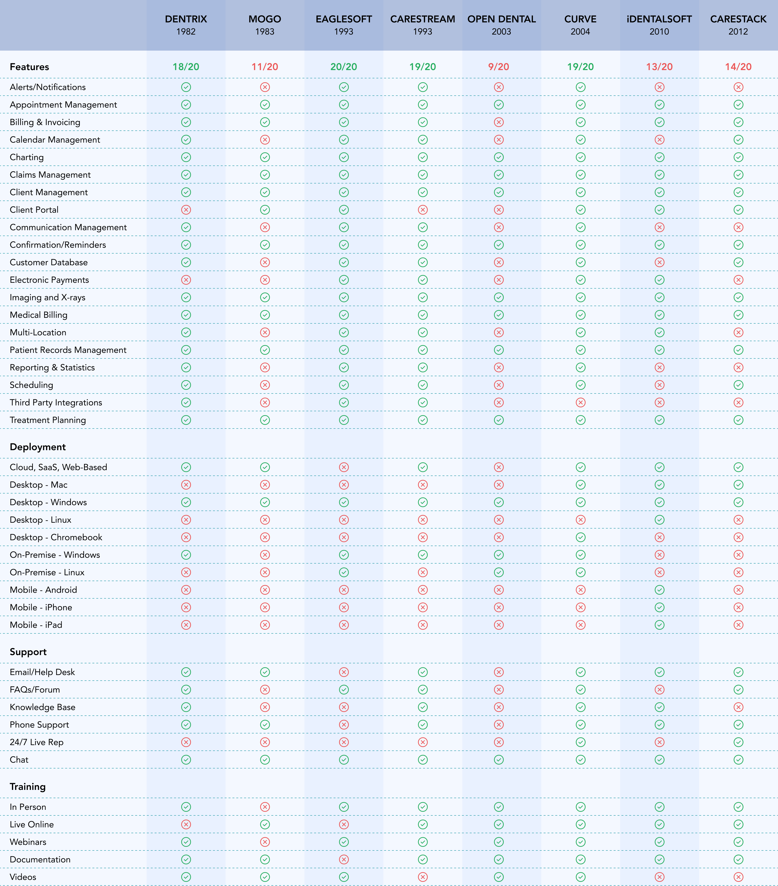

Overview
Archy is a cloud-based dental practice management platform I designed from scratch over 14 months as the sole designer — spanning practice management, patient engagement, billing, imaging, and payroll across more than a hundred screens.
The dental industry runs on infrastructure that hasn't meaningfully changed in 30 years. Dentrix — the market leader since 1982 — requires over 50 clicks to process a single insurance claim. Dental staff don't hate their software because they're tech-averse; they hate it because it was never designed for the way they actually work.
Archy's brief was to replace that. My job was to design something dental staff would actually want to use — and to ship it fast enough for a seed-stage startup to raise on.
Final Designs & Impact
Before diving into the process — here's a glimpse of what shipped across six of the thirteen product domains.


Research
Dental practices have two distinct user groups with almost no overlap in their daily workflows: the practice itself (dentists, front office, billing specialists, dental assistants) and their patients. Designing for both from a single platform meant the information architecture had to serve radically different mental models simultaneously.
I conducted user interviews and synthesized findings from Archy’s existing client relationships to build personas for each role.
User Personas
User Journeys
Angela's day revealed that dentists think in patient context, not schedule slots — which led us to make patient details surfaceable directly from the calendar card without navigating away.
Jennifer's workflow showed that back-office staff switch contexts constantly mid-task — which led us to use persistent side drawers rather than modals for charting and patient records.
Competitive Analysis
The dental software market is dominated by tools built in the 1980s and 90s that have been patched rather than redesigned. I analyzed eight products — established players and newer entrants — to identify where the market was vulnerable and where Archy had an opening.

Product and UX review of existing playersFeature Prioritization
From the competitive analysis and user research, I mapped features against a Must Have / Should Have / Could Have / Won't Have framework to define the MVP scope. The non-negotiables were the domains where legacy software was most painful: scheduling, charting, claims, and patient management. Everything else was phased.

Design System
With 13 product domains and a single designer, the design system wasn't optional — it was how I stayed consistent without slowing down. I built the component library in Figma from the first wireframe iteration, adding states and variants as new domains introduced new interaction patterns.
Color rationale: blue and teal for credibility and clinical authority — the same associations dental staff already bring to medical software — with semantic color reserved for status indicators across scheduling, claims, and pre-auth, where color-coding directly reduces cognitive load during high-volume workflows.
Design Reasoning
Takeaways
Three things I carry from Archy into my current work:
Designing for expert users in high-stakes domains requires earning their trust before asking for their time. Dental staff using Archy were skeptical of new software — they'd been burned before. Every design decision I made had to feel obviously correct within the first ten seconds of use.
Scope discipline under constraint is a design skill. With 13 product domains, one designer, and a startup timeline, I had to make hard calls about what got depth and what got breadth. The decisions I'm most proud of are the ones where I said no to good ideas because better ones needed the cycles.
The architecture training shows up most in information architecture — in asking "how does a person move through this system over a full day" rather than "how do they complete this task." Dental staff aren't doing one thing; they're navigating a platform all day. Designing for that sustained context is a different problem than designing for a single flow.